来源：https://shengcaiyoushu01.feishu.cn/docx/VSWydFIiEopT1zxtI6Mcm2rFnOd
在小红书上，养生一直都是个流量密码。
从早期通过简单的“大字报”，就做到了将近50万粉丝的「百岁老人计划」。
再到后来仅靠讲一个拉屎技巧，就实现橱窗接近百万销售额的「拉屎女王」。
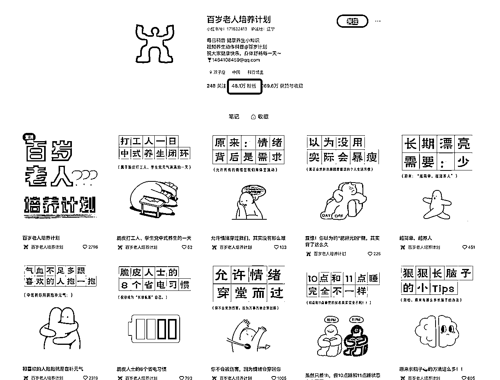
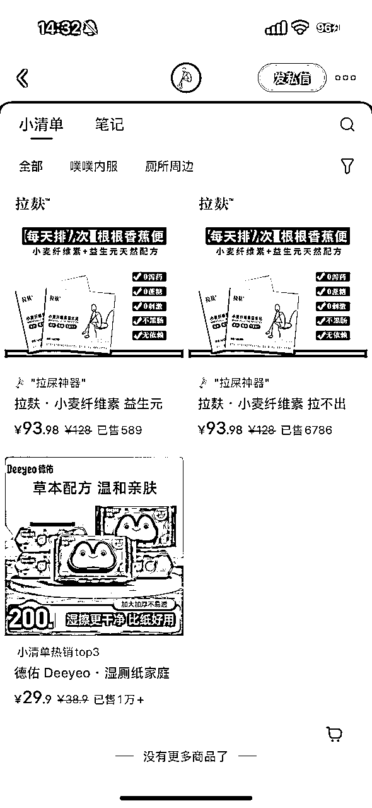

养生内容火爆的秘诀，其实就在于创作者总能找到新颖的切入点和有趣的表现方式。
最近，养生内容又有了新玩法。
一种以中国水墨风呈现的内容，突然火了起来。
代表账号「无忧四季养生」，短短两周就涨了2万粉。其实，这种内容用AI工具做起来超简单，今天就来教大家怎么1:1做出这种内容。
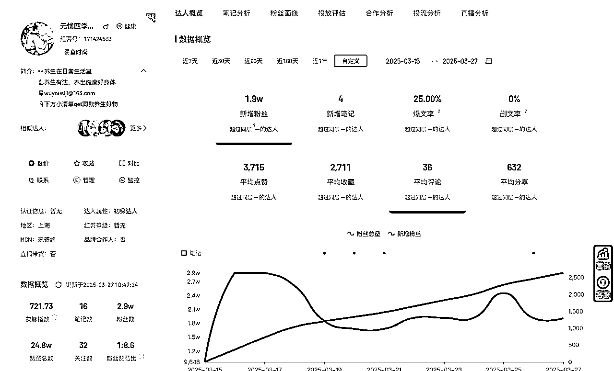
我们一共分为3个部分：

这个账号截止目前，一共发布了16篇笔记：
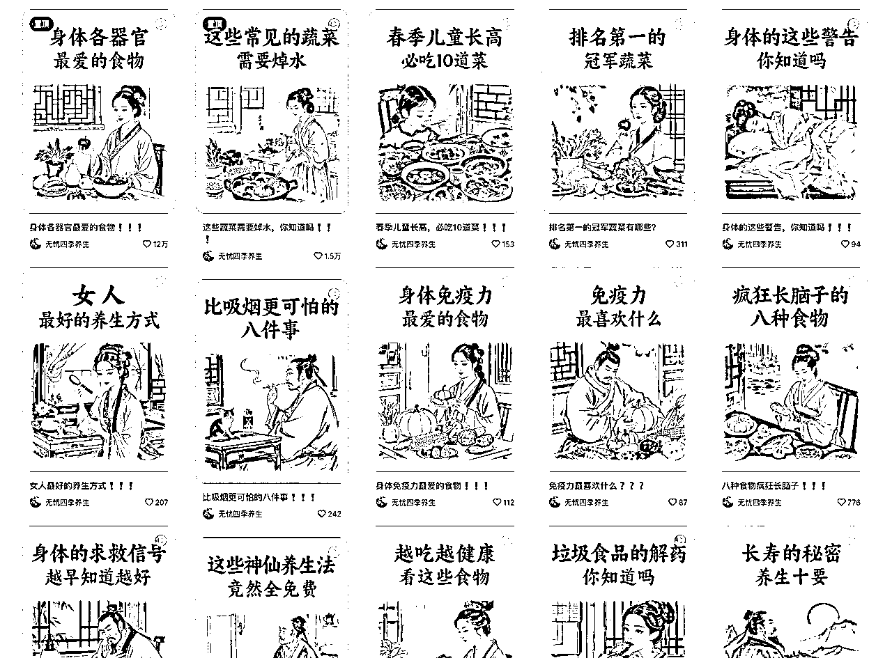
具体是这些选题：
我们来总结一下，它的选题其实就是讲——“懒人养生吃法”。
用老百姓家里的普通食材，来实现「巨大的」养生效果。
分析完之后，我们可以就可以做一些选题衍生了：
「一日三餐这样搭配，满足身体五大需求」
「0成本消水肿！3种食物让你轻松告别浮肿」
「警惕！身体3大防线受损的5个信号，你感受到吗？」
「春季最适合孩子长高的7款家常菜，家长一定要学会」
「5种黄金食材，让你的胃越来越强壮」
「一杯茶逆转衰老？揭秘最被低估的排毒茶饮」
你比较喜欢哪个？
我选了「5种黄金食材，让你的胃越来越强壮」

接下来我们需要拆解一下它的文案，我们选取其中 点赞最多 的4篇笔记来拆解
笔记1：《身体各器官最爱的食物》
心脏喜欢红薯，肺部喜欢梨，血管喜欢西兰花
大肠喜欢苹果，大脑喜欢核桃，脾胃喜欢山药
肝脏喜欢枸杞，肾喜欢黑豆，皮肤喜欢西红柿
眼睛喜欢胡萝卜，牙齿喜欢猕猴桃。
笔记2：《这些常见的蔬菜需要焯水》
豆角不焯水，肚子疼成鬼。
菠菜草酸高，热水易冲销。
蘑菇杂菌多，沸水一焯净污浊。
西兰花藏虫深，滚滚热水来驱奔。
香椿亚硝多，烫过才敢说。
木耳沙难去，焯水更顺利。
黄豆芽藏菌，热水洗礼更放心。
笔记3：《疯狂长脑的8种食物》
注意力难集中，多吃全麦面包
爱忘事，多吃银杏果
学习效率低，多吃南瓜子
脑子笨笨的，多吃深海鱼
记忆力衰退，多吃花生
大脑紧绷，多喝绿茶
逻辑混乱，多吃芦笋
脑子卡壳，多吃鸡蛋
笔记4：《越吃越健康，看这些食物》
常吃菠菜抗衰老，常吃番茄皮肤好
常吃枸杞眼睛亮，常吃红枣气血足
常吃核桃记性好，常吃山药肠道顺
常吃苦瓜火气消，常吃豆类补蛋白
有没有发现，他的脚本都是“古文体”！！
我们借助AI，也可以轻松写出这样的古文体：

提示词如下：
帮我就——《5种黄金食材，让你的胃越来越强壮》这个主题，写一段文案，需要是古文体。你可以参考下面的例子： —————— 《身体各器官最爱的食物》 心脏喜欢红薯，肺部喜欢梨，血管喜欢西兰花 大肠喜欢苹果，大脑喜欢核桃，脾胃喜欢山药 肝脏喜欢枸杞，肾喜欢黑豆，皮肤喜欢西红柿 眼睛喜欢胡萝卜，牙齿喜欢猕猴桃。 《这些常见的蔬菜需要焯水》 豆角不焯水，肚子疼成鬼。 菠菜草酸高，热水易冲销。 蘑菇杂菌多，沸水一焯净污浊。 西兰花藏虫深，滚滚热水来驱奔。 香椿亚硝多，烫过才敢说。 木耳沙难去，焯水更顺利。 黄豆芽藏菌，热水洗礼更放心。 《疯狂长脑的8种食物》 注意力难集中，多吃全麦面包 爱忘事，多吃银杏果 学习效率低，多吃南瓜子 脑子笨笨的，多吃深海鱼 记忆力衰退，多吃花生 大脑紧绷，多喝绿茶 逻辑混乱，多吃芦笋 脑子卡壳，多吃鸡蛋 《越吃越健康，看这些食物》 常吃菠菜抗衰老，常吃番茄皮肤好 常吃枸杞眼睛亮，常吃红枣气血足 常吃核桃记性好，常吃山药肠道顺 常吃苦瓜火气消，常吃豆类补蛋白
来看看AI最后产出的文案：
《5种黄金食材，让你的胃越来越强壮》
胃气虚弱，南瓜补益；
胃中寒凉，生姜驱霜；
胃燥不适，蜂蜜滋养；
胃炎隐痛，小米安康；
胃酸扰乱，山药稳当。
五材常备，日日相伴，
以食为药，胃府安然。
怎么样？不错吧？我们直接就用这个！

接下来，我们需要把我们的文案转化成图片（每句文案对应一张图），再把图片转化成视频。
我们同样可以借助AI来写文案转为图片的提示词：

《5种黄金食材，让你的胃越来越强壮》
胃气虚弱，南瓜补益；
提示词：一位古代文人穿着长袍，坐在古色古香的书房里，手捧一碗热腾腾的南瓜粥，眼神专注，面带微笑，仿佛感受到了南瓜的滋补力量，背景有竹子和书卷。
胃中寒凉，生姜驱霜；
提示词：一位古代书生站在寒风中的庭院里，手持一根新鲜的生姜，微风吹动他宽大的衣袖，神情坚定，似乎在抵御寒冷，背景是冬季雪景。
胃燥不适，蜂蜜滋养；
提示词：一位古代女子在古典的厨房里，优雅地舀着一勺金黄色的蜂蜜，缓缓滴入茶杯中，周围是蜂巢和花卉，氛围温暖、宁静。
胃炎隐痛，小米安康；
提示词：一位身着素雅衣袍的老者在山间小屋前，正在用陶瓷锅煮着小米粥，身旁有一只小狗安静地趴着，周围绿意盎然，显示出温和与安康。
胃酸扰乱，山药稳当。
提示词：一位古代医者站在药堂前，手持山药根，认真端详，似乎在研究其药效，背景是古代药材架，灯光柔和。
五材常备，日日相伴，
提示词：一位古代贤人坐在餐桌旁，桌上摆满了南瓜、生姜、蜂蜜、小米和山药，贤人一手捧书，一手端着茶杯，面带思索的表情，整个场景静谧而典雅。
以食为药，胃府安然。
提示词：一位古代文人轻松坐在亭子中，手中握着一碗美味的汤，背后是繁茂的树木和潺潺的流水，整体场景安宁、和谐，文人脸上露出满足的微笑。
然后我们需要生成一下这位博主的视频图片风格。
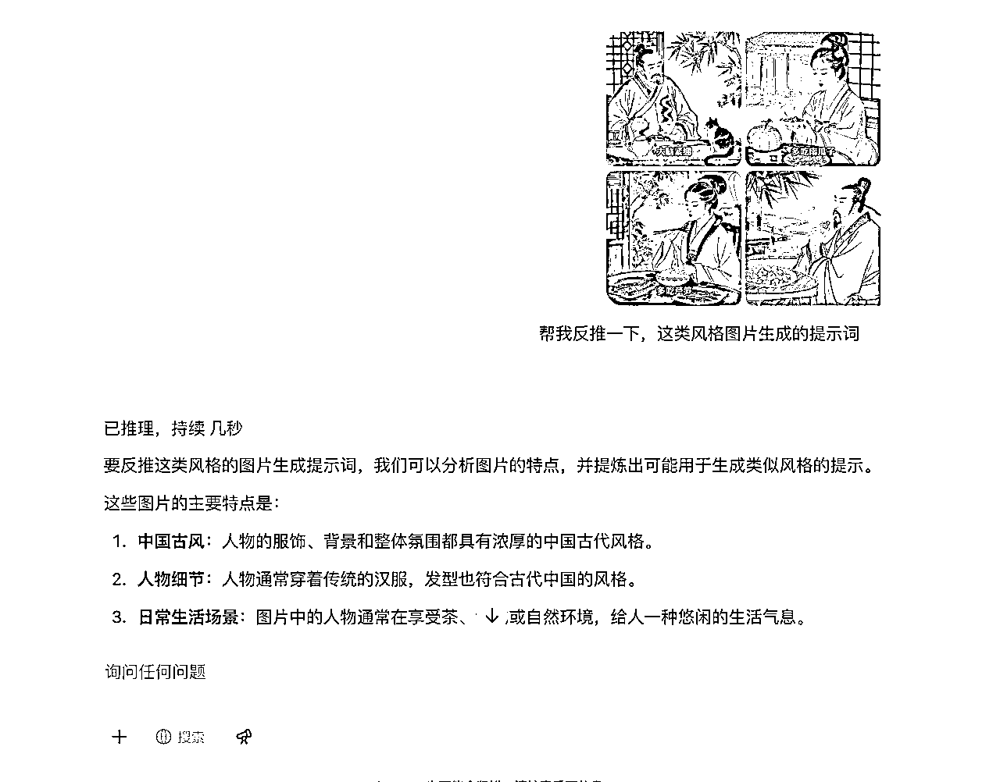
我们去作品里，截几张图片，然后直接上传AI，叫它帮我们反推风格提示词。
最后得到的风格提示词描述是：
国风水墨插画，古典雅致，淡彩柔和，富有东方韵味与传统笔墨意境，画面色调温润、自然，表现出宁静、和谐的氛围，风格借鉴齐白石的细腻笔触，李可染的水墨氛围，张大千的传统艺术精髓，展现出深厚的文化底蕴与艺术韵味。
然后来到即梦的「文生图」页面，输入提示词+风格描述
最后来看看效果：
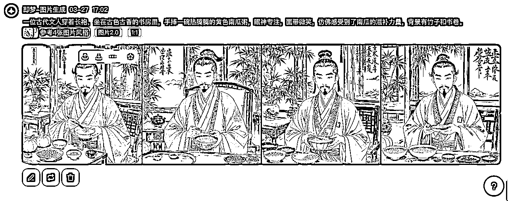
还不错，下面我们依次生成剩下的6张图。步骤一致，我就不重复讲解流程啦，我直接把结果贴出来
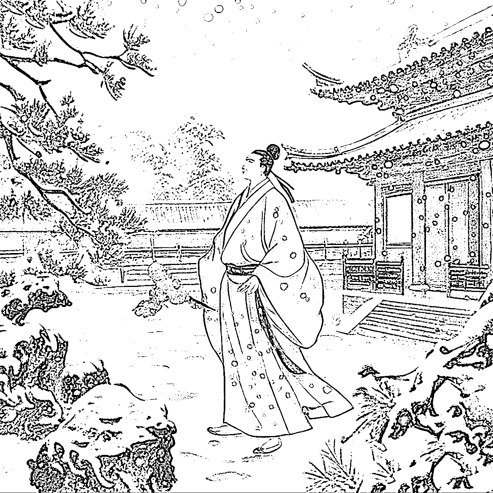
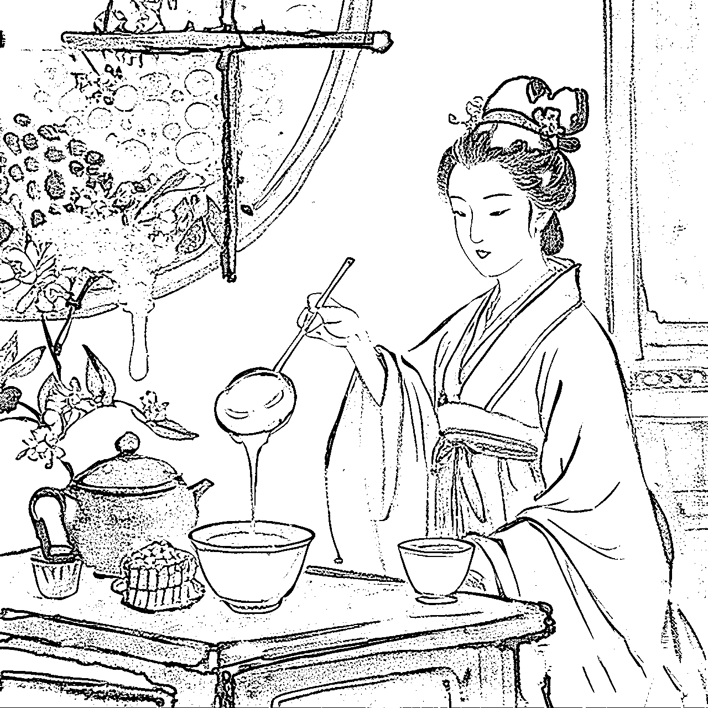

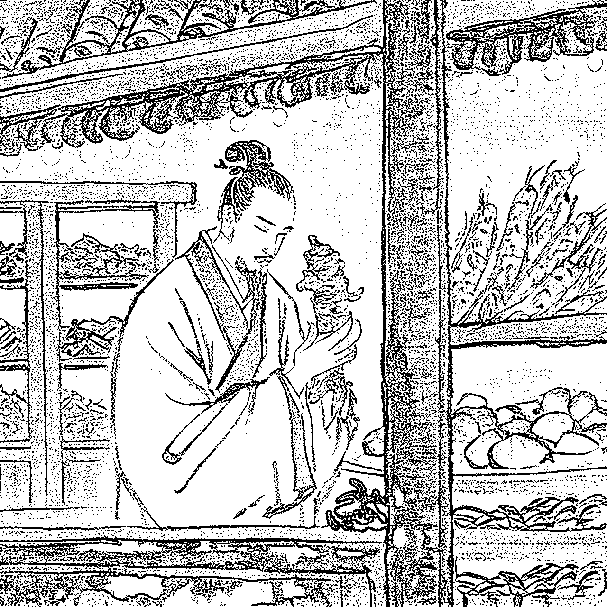
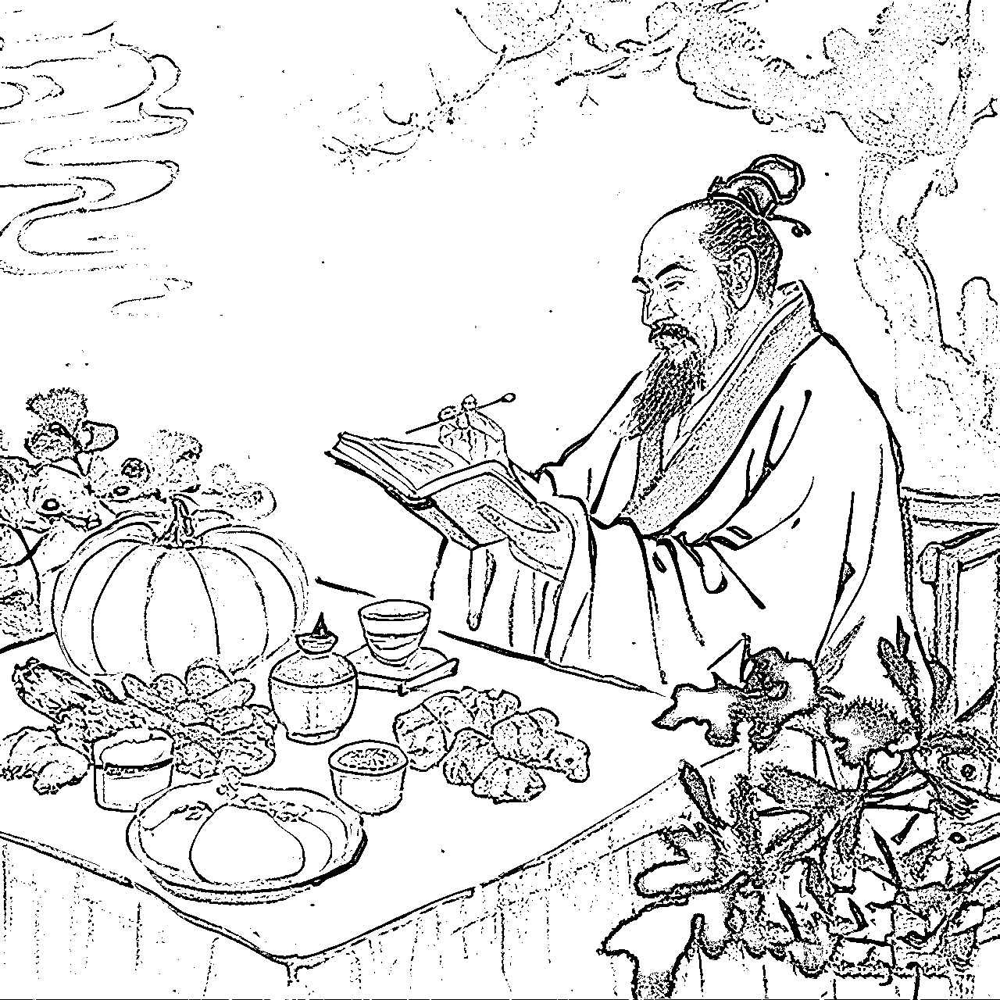


下一步，就是让这些图动起来。其实有很多工具都能实现这个效果，比如海螺AI、可灵、即梦、runway、sora、vidu、luma、pixverse等等……
我这里用的是 海螺AI

https://hailuoai.video/
接下来，把我们准备好的7张图逐个上传进去，输入提示词，让图片动起来。
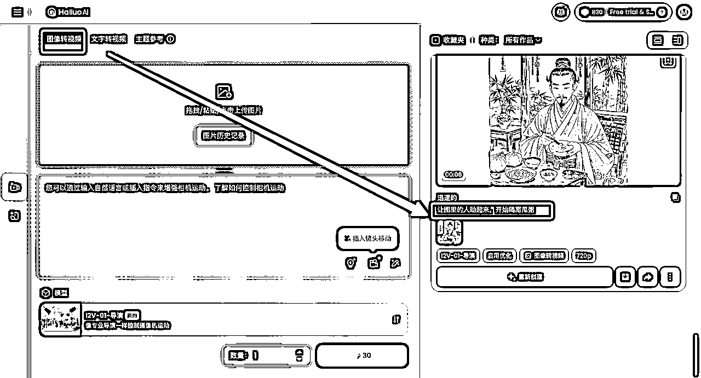
然后就可以把生成的7个视频都保存下来啦。
最后把这些视频，都拖进剪映
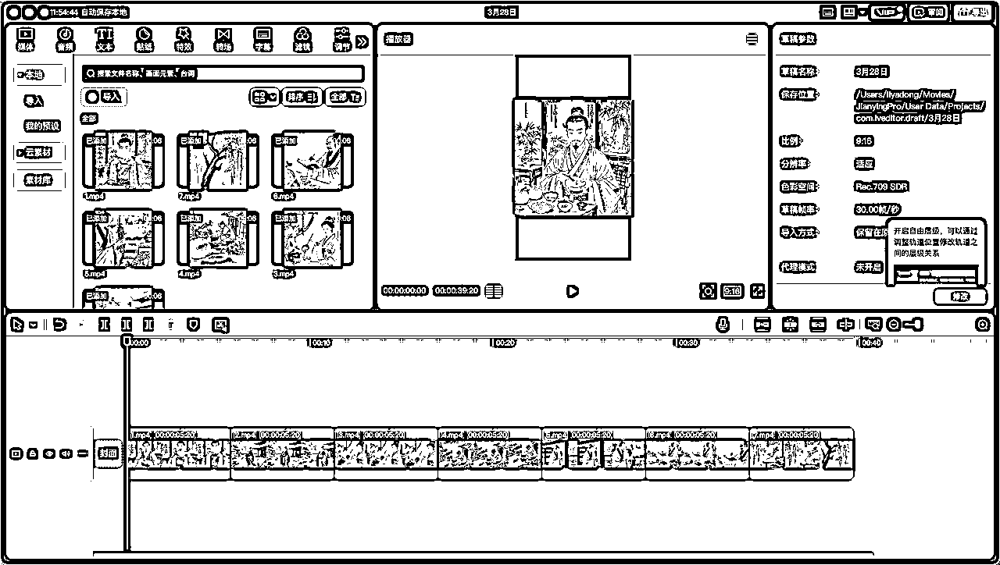

然后我们需要生成一下画外音，我们用 fish audio 这个工具来克隆博主的声音

这是 fish audio 生成的音频（你可以听一下试试看）
音频生成好了，就拖进剪映备用
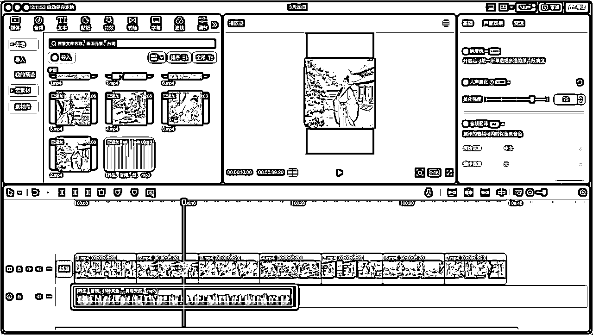
下面我们来拆解一下字幕，我们上传字体识别网站，进行识别→https://www.likefont.com/
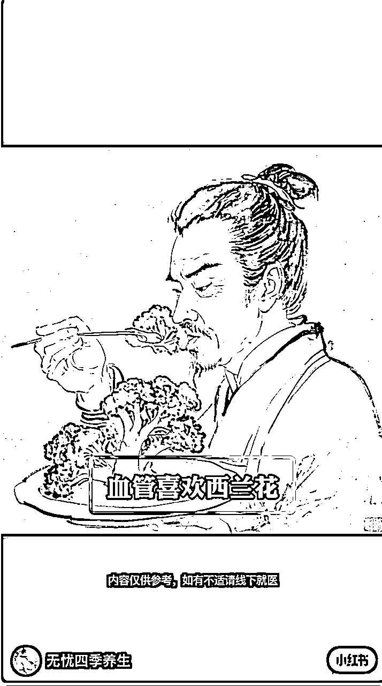
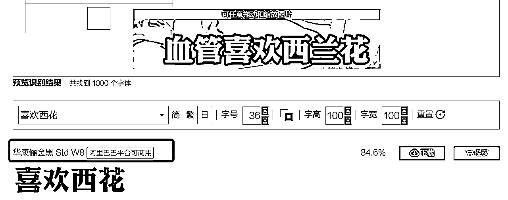
网站识别出来，显示这位博主用的是“华康俪金黑”，我们也用这个

调整一下文字的大小，设置一下描边

接着我们来看bgm怎么做，先来听一下博主的bgm
没错，这个BGM就是《神话》这这首歌。但是不是原曲，是一个有点古风韵味的版本。我们去剪映里找找，看看有没有。

还真找到了，就是这个葫芦丝版本。我们把这个BGM放到轨道上。

最后，我们精剪一下，让素材能匹配上画外音

画外音的音量有点小，如果需要高度还原，可以在剪映里再调节大即可。最后再做一个封面图，就能发小红书了。